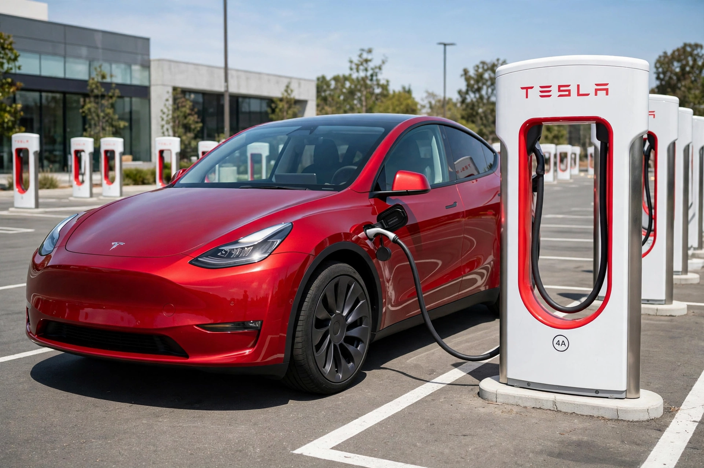

Tesla, Inc.
| Tesla, Inc. | |
|---|---|
[Image: The Tesla "T" logo in red] | |
| Formerly | Tesla Motors, Inc. (2003–2017) |
| Type | Public |
| Traded as | Nasdaq: TSLA |
| Industry | Automotive; energy; artificial intelligence |
| Founded | July 1, 2003; San Carlos, California, United States |
| Founders | Martin Eberhard and Marc Tarpenning |
| Headquarters | Austin, Texas, United States (Gigafactory Texas) |
| Key people | Elon Musk (CEO); Robyn Denholm (chair) |
| Products | Model S, Model 3, Model X, Model Y, Cybertruck, Semi; Megapack, Powerwall, Solar Roof |
| Website | tesla.com |
Tesla, Inc. is an American multinational automotive and clean energy company headquartered in Austin, Texas. Founded in 2003 by Martin Eberhard and Marc Tarpenning and named after inventor Nikola Tesla, the company designs and manufactures battery electric vehicles, battery energy storage systems, solar panels and related products, sold through tesla.com and its own stores. Elon Musk, who joined as an early investor and became CEO in 2008, is the company's best-known figure. Tesla delivered the best-selling electric car in the world, the Model Y crossover, and operates large "Gigafactory" plants in the United States, China and Germany.
History
Tesla's first product was the Roadster sports car (2008), based on a Lotus chassis, which demonstrated that electric cars could be desirable and fast. It was followed by the Model S luxury sedan (2012), the Model X SUV with falcon-wing doors (2015), the mass-market Model 3 sedan (2017) and the Model Y (2020); the first letters of these models famously spell "S3XY". The angular stainless-steel Cybertruck pickup entered production in late 2023, and the Semi truck began deliveries in 2022.
The company went public in 2010, the first American carmaker to do so since Ford in 1956. After years of losses and a difficult Model 3 production ramp described by Musk as "production hell", Tesla achieved sustained profitability from 2019 and its market value surged past $1 trillion in 2021, briefly making it one of the world's most valuable companies. In 2024 Tesla faced intensifying price competition from Chinese makers such as BYD, which at times overtook it in quarterly global battery-electric sales.
Vehicles and technology
Tesla sells cars directly to consumers rather than through franchised dealers, and operates a proprietary fast-charging network, Supercharger, whose connector (NACS) has been adopted by most other North American carmakers. Its driver-assistance systems, marketed as Autopilot and "Full Self-Driving (Supervised)", use cameras rather than lidar. The company has also shown the Optimus humanoid robot prototype and works on robotaxi services.
Energy products
Through its Tesla Energy division — expanded by the 2016 acquisition of SolarCity — Tesla sells the Powerwall home battery, the Megapack utility-scale battery, solar panels and the Solar Roof.
Criticism
Tesla and Musk have drawn criticism over driver-assistance safety investigations, build-quality complaints, workplace and labour disputes, and Musk's public statements, including a 2018 securities case over his "funding secured" tweet about taking the company private.

A red Tesla Model Y electric crossover photographed at a Supercharger station
See also: Nvidia · Apple Inc.